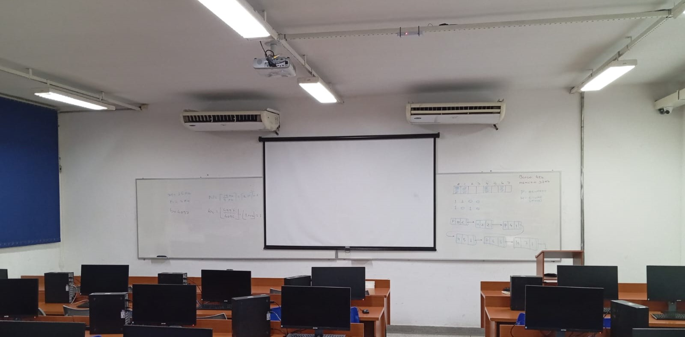

Notícias relacionadas às organizações da FT
CAT faz abaixo-assinado para manutenção dos ares-condicionados da FT

O Centro Acadêmico de Tecnologia elaborou um abaixo-assinado para que os estudantes possam se manifestar em relação aos ares-condicionados da FT. Ao longo das duas últimas semanas, os membros da organização passaram nas diversas salas de aula da faculdade para explicar sobre a movimentação e incentivar os alunos a contribuirem com a causa. Boa parte dos aparelhos apresentam falhas significativas há muito tempo, envolvendo não obedecer ao controle corretamente, e até não funcionar.
Conheça as organizações da Faculdade de Tecnologia!
Atria Jr
A Atria Júnior é a empresa júnior da Faculdade de Tecnologia da Unicamp, formada por estudantes dos cursos de graduação da FT. Desde sua fundação em 2018, a Atria Júnior já realizou mais de 24 projetos, impactando a economia brasileira em R$ 85.000,00 e proporcionando aos alunos a oportunidade de aplicar o conhecimento teórico em projetos reais.
Comissão de Engenharia de Telecomunicações - CETEL
A CETEL é a Comissão de Engenharia de Telecomunicações, organizada por alunos para os alunos. Nosso objetivo é promover a integração entre alunos do curso de Engenharia de Telecomunicações, diretoria, docentes e demais órgãos da Universidade. Assim, prestando apoio e orientação aos alunos de forma a auxiliar no desenvolvimento profissional e social, assim como aos membros internos da organização. Na prática, buscamos promover eventos, palestras e visitas técnicas voltadas às áreas da Engenharia e das Telecomunicações. Se você é aluno de Engenharia de Telecomunicações e quer contribuir diretamente para o fortalecimento do curso em nossa universidade, a CETEL é o lugar certo!
CDI - Comissão Discente de Informática
A CDI é a organização que representa os cursos de T.I dentro da Faculdade de Tecnologia da Unicamp - T.A.D.S e S.I. Além de ser um canal oficial de comunicação entre os alunos e os docentes, organizamos uma série de eventos como: cursos, palestras e visitas técnicas em parceria com a comunidade e com empresas tech. Dessa forma, trabalhamos para que sua jornada na Universidade seja aproveitada da melhor forma possível! Conte com a CDI durante seu ano letivo para tirar dúvidas e sugerir ideias.
Camaleão
A Camaleão representa os alunos dos cursos de ambiental da FT, buscando atender suas demandas e promover eventos com temas de interesse acadêmico como palestras, workshops, visitas técnicas e a fins. Em 2019, a Camaleão em parceria com o GGUS - Grupo Gestor Universidade Sustentável, retirou os copos descartáveis do bandejão nos campus de Limeira. Outra atividade importante ocorreu em 2020, através da parceria com outras Universidades estaduais como a Unesp, UFSCar e UFPR, na qual nós nos unimos para formar a primeira Semana Integrada Do Meio Ambiente e Tecnologia.
Se você faz parte do curso de Tecnologia em Saneamento Ambiental e Engenharia Ambiental e deseja construir uma universidade e sociedade mais sustentável, fique ligado(a) em nossas redes sociais e junte-se a nós!
CAART
A CA²RT é o Centro Acadêmico André Rebouças de Transportes, uma organização estudantil que busca representar os alunos do curso de Engenharia de Transportes e ser um canal de comunicação entre os discentes, a coordenação do curso e a diretoria da FT.
Nosso nome faz homenagem a André Rebouças, o primeiro engenheiro negro do Brasil, nascido em 1836. Foi inventor, físico, matemático, jornalista e grande abolicionista - um dos fundadores da Sociedade Brasileira Contra a Escravidão - , que, após se especializar em engenharia civil na Europa, retornou ao Brasil para atuar com seu irmão, Antonio Rebouças, em modernizações da malha urbana do país, como a construção da Estrada de Ferro que ligou Curitiba ao Porto de Paranaguá.
O principal objetivo do CA é incentivar o desenvolvimento humano, social, acadêmico e profissional dos membros e alunos, por meio de projetos relacionados a engenharia de transportes, logística e mobilidade. Esse incentivo se materializa em forma de palestras, visitas técnicas, indicações de cursos e fornecimento de outras atividades extracurriculares.
CAT - Centro Acadêmico de Tecnologia
O Centro Acadêmico de Tecnologia (CAT) é uma entidade discente que tem como papel representar todos os estudantes da FT, sendo também responsável pela organização de atividades acadêmicas extracurriculares como debates, discussões, palestras, semanas temáticas, visitas técnicas em empresas privadas e órgãos públicos, recepção de calouros, realização de projetos, mobilização e organização de reivindicações e ações políticas dos estudantes, mediação de negociações e conflitos individuais e coletivos entre estudantes e a faculdade.
Já dá pra ver o quanto que dá pra fazer né? Então se ficou interessado em movimentar a facul com a gente, não perca as datas do processo seletivo e segue a gente lá no Instagram: @cat.limeira .
A Atlética AAATU
A AAATU é a Atlética Acadêmica da Engenharia de Telecomunicações e Automação da Unicamp, fundada em 2010. Há 20 anos, a AAATU representa com orgulho os cursos de Engenharia de Telecomunicações, Engenharia de Transportes, Engenharia Ambiental, Sistemas de Informação, Saneamento Ambiental e Tecnologia e Análise em Desenvolvimento de Sistemas. Aproveitem e vivam intensamente essa fase incrível da vida universitária. Contem sempre com a AAATU para tirar dúvidas, ajudar com informações e, claro, para participar de todas as atividades esportivas e sociais que promovemos! Instagram: @atleticaaatu
A Atlética AAAETA
A Atlética AAAETA é uma das mais tradicionais da universidade, organizando eventos esportivos que integram os alunos de diversos cursos. A atlética é responsável por promover campeonatos, gincanas e eventos sociais que fortalecem o espírito universitário e o senso de comunidade.